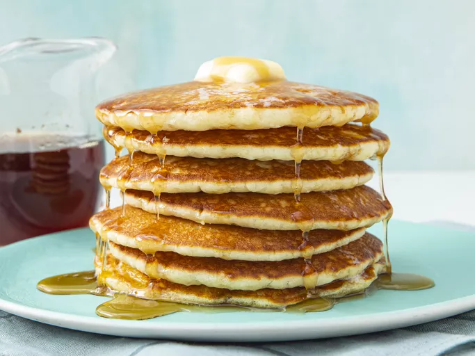

A very light and fluffy pancake recipe that requires fresh buttermilk, but it's the best I've ever made!
As convenient as a store-bought mix can be, every home cook needs a good buttermilk pancake recipe in their repertoire. Don't have a tried-and-true favorite yet? You're in luck! The Allrecipes community can't get enough of these classic buttermilk pancakes. Reviewers say they're light, fluffy, moist, and full of rich flavor.